Project 05 / 07
LOS PLATOS DE FRIDA
Frida’s Plates
- Type
- Concept restaurant · Mexican cuisine
- Location
- Hilltown shopping mall
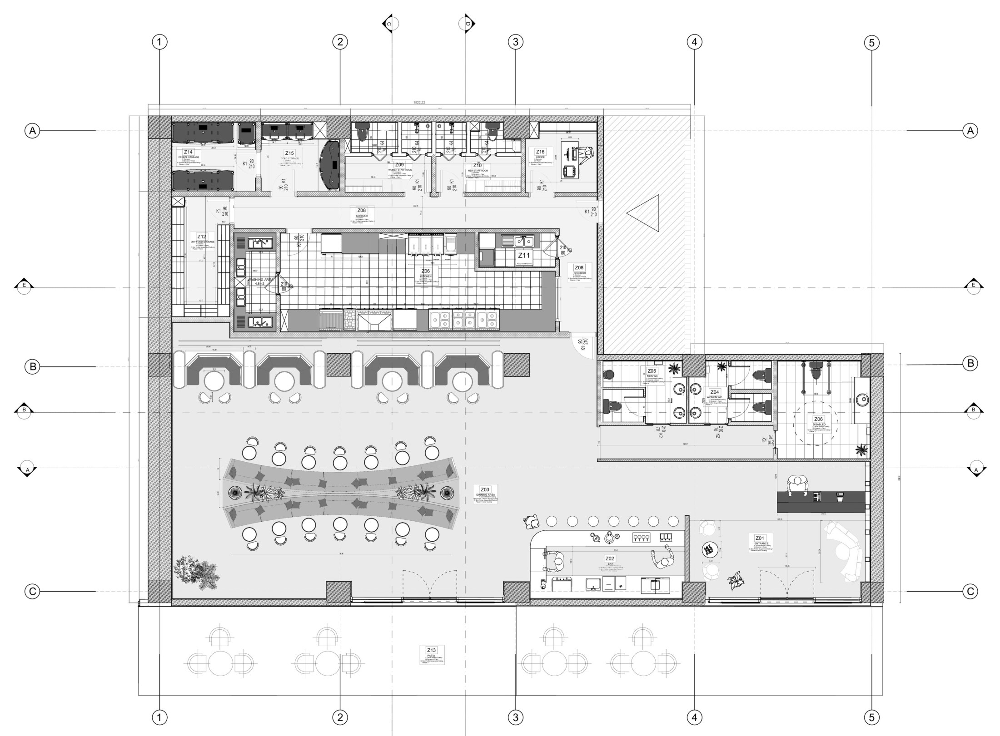
Overview
A concept restaurant inspired by the way Frida Kahlo transferred Mexican culture and revolutionary national identity to canvas. A different festival is celebrated every month: not only a dining experience, but a cultural journey.
Brown, orange, green, navy blue and pink create a lively, dynamic interior. Glass mirrors on the ceiling above the dining tables add depth; sombrero hats are exhibited at the entrance.
- Type
- Concept restaurant · Mexican cuisine
- Location
- Hilltown shopping mall
- Studio
- Interior Design Studio III
Concept
Not only a dining experience, but a cultural journey.
- 01
A festival every month
Special decorations and menus, as for Día de los Muertos.
- 02
Ceiling mirrors
Inspired by Frida Kahlo’s art, placed above the dining tables.
- 03
Day of the Dead
Frida Kahlo paintings, colourful flowers and patterned skeletons throughout.

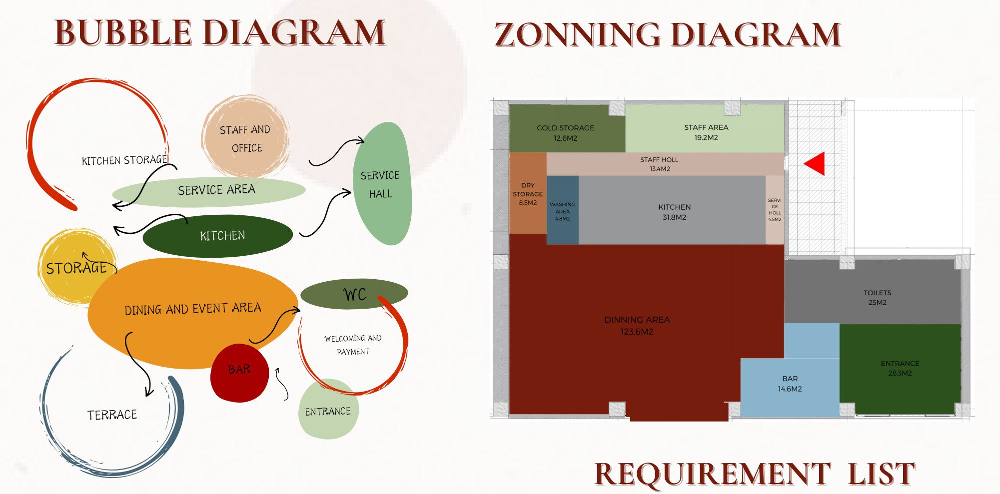
Inspect
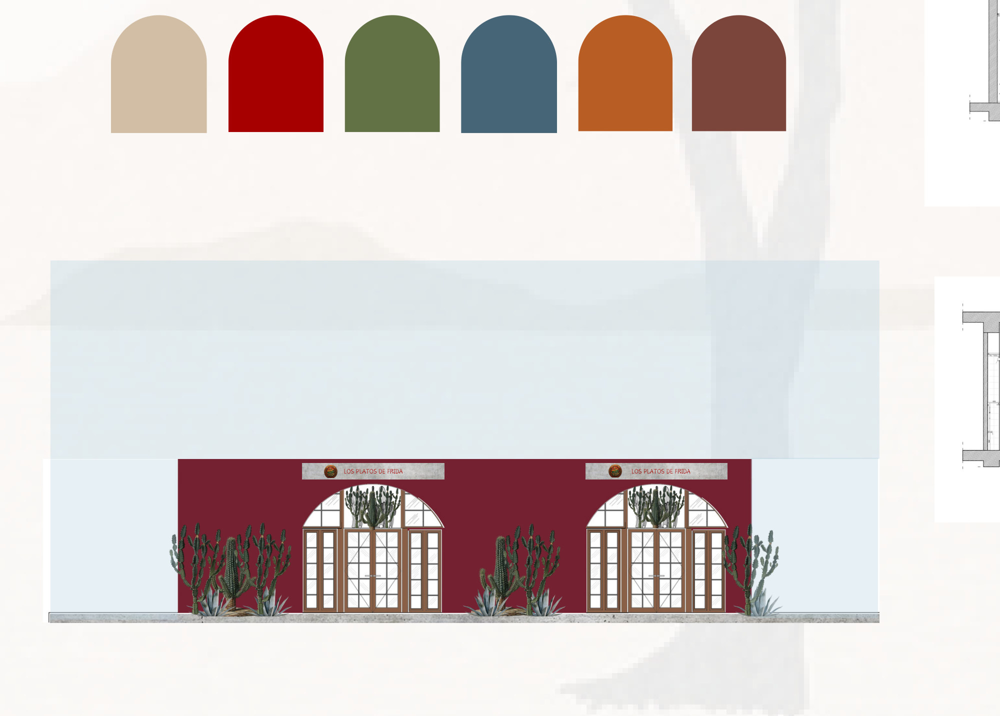
InspectPlans

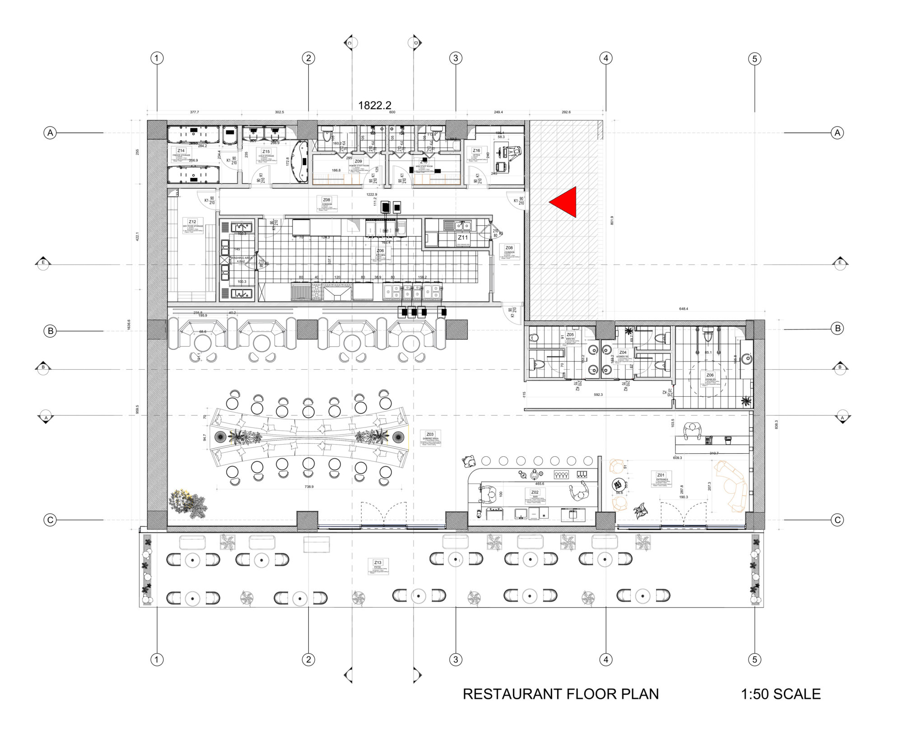
Inspect
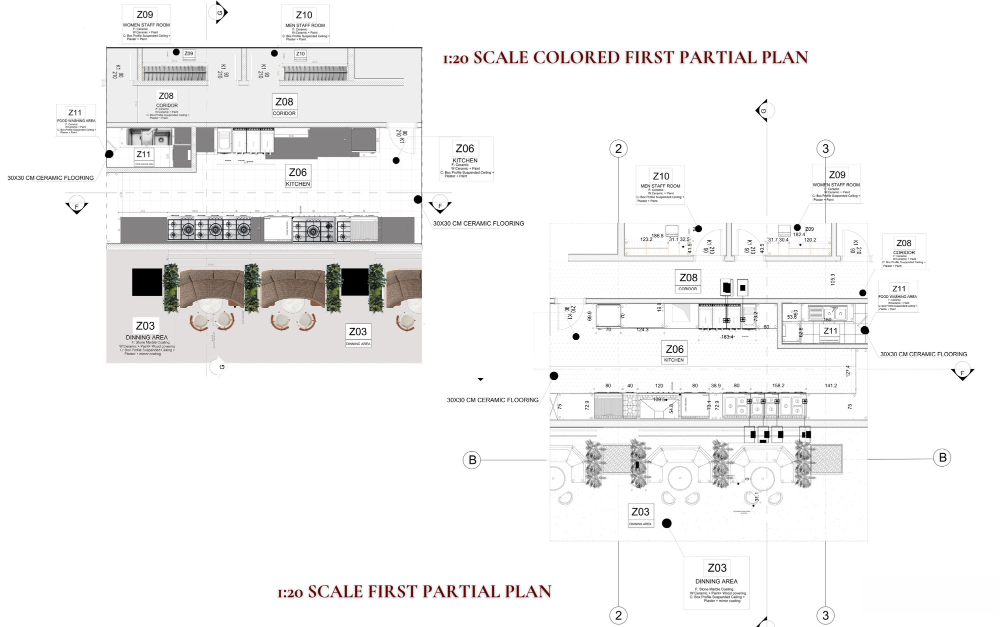
Inspect
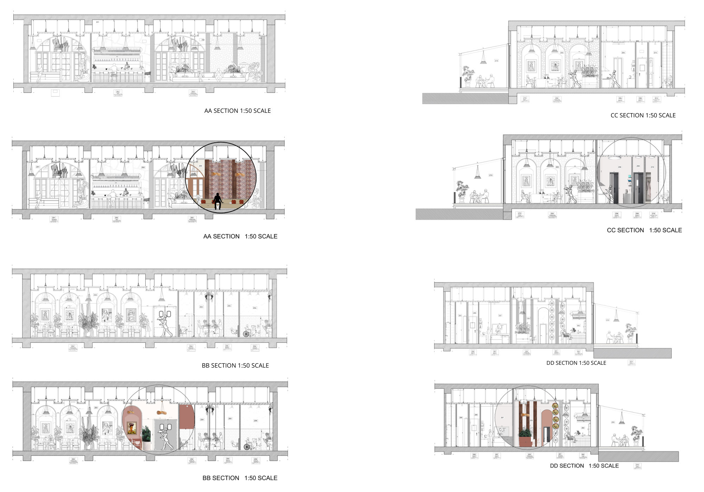
Inspect
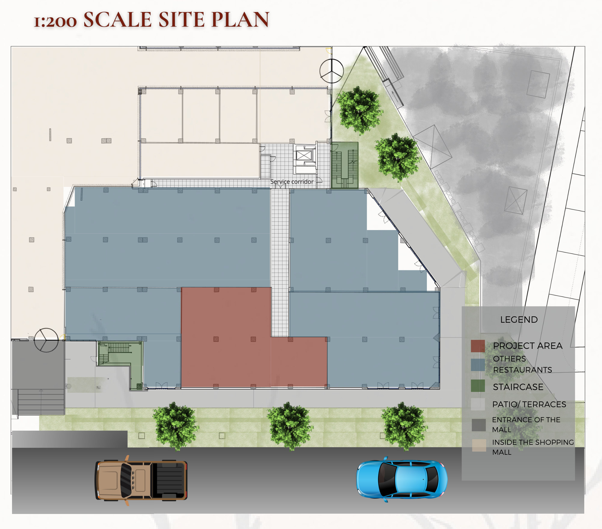
InspectSpaces
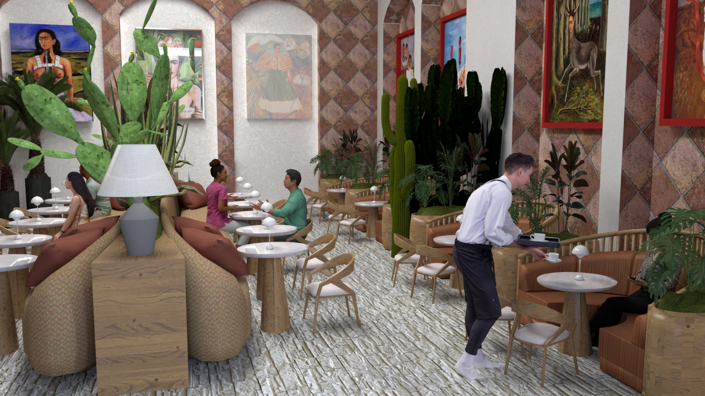
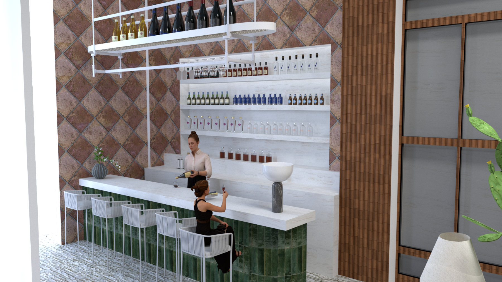
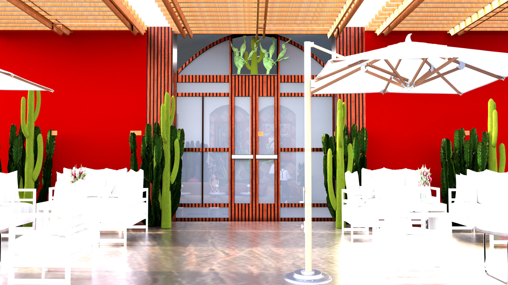
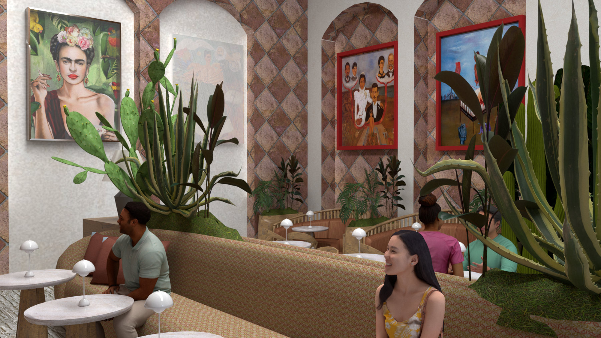
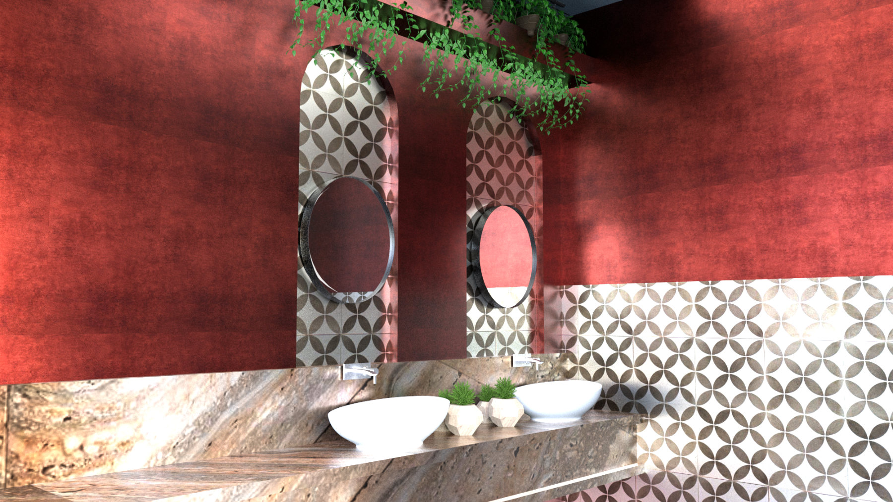
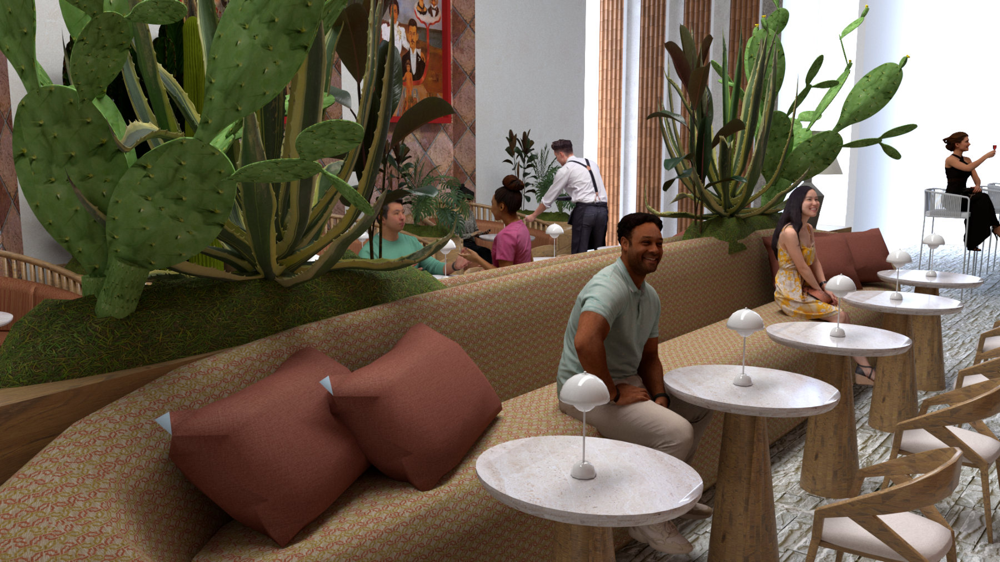
Details

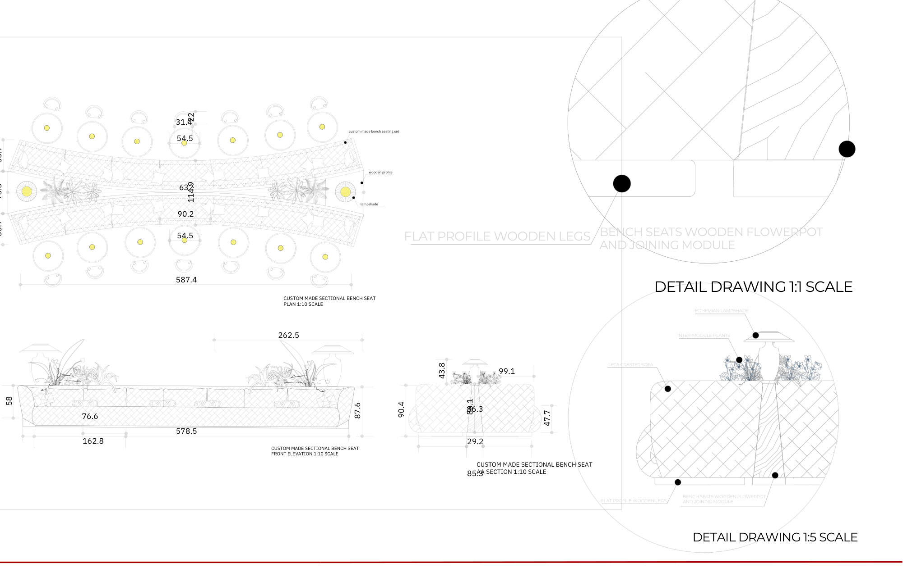
Inspect
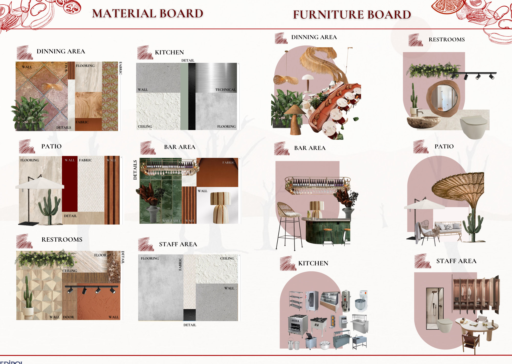
Inspect
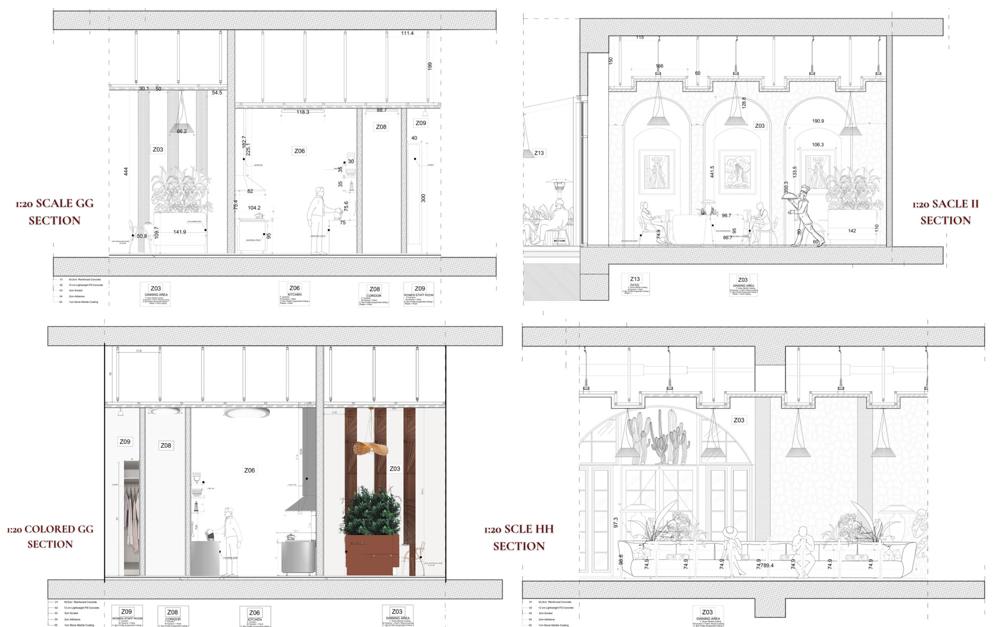
Inspect